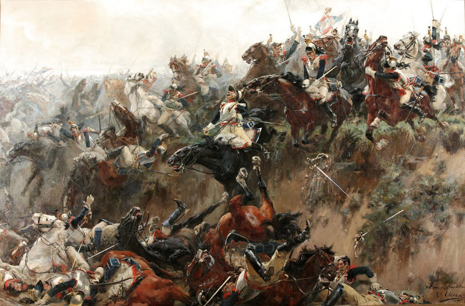
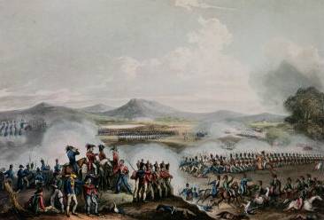
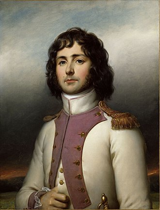
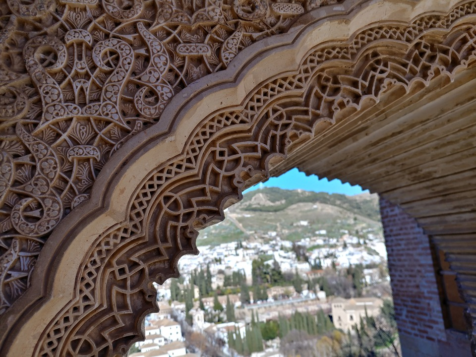
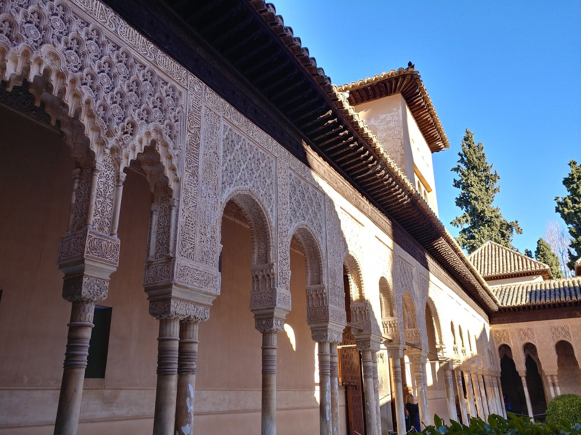

이겨도 이긴 것이 아니다 - 탈라베라 전투 (제6편)
게시: 2018-04-01T22:03:18+09:00
프랑스군 2개 사단을 위기에서 구출해준 것은 전선 중앙부에서처럼 영국군 자신들의 경험 부족과 무지였습니다. 페인(Fane)과 앤슨(Anson)의 영국군 기병대가 프랑스군을 위협하여 방진을 이루게 한 것까지는 좋았습니다. 그냥 그렇게 협박만 했으면 더 좋았을 뻔 했습니다. 그렇게 방진을 이룬 프랑스군을 메데진 언덕 위의 영국군 포병대가 계속 갉아먹고 있었으니까요. 그러나 고슴도치처럼 총검을 촘촘히 내밀고 방진을 이룬 프랑스군 정면을 향해 영국군 기병대는 겁도 없이 돌격을 감행했습니다. 대부분의 경우 이런 돌격은 기병대가 큰 피해를 입고 물러서는 것으로 끝나기 마련이었습니다. 그러나 하룻강아지 범 무서운 줄 모른다고, 영국군은 용감했습니다.
하지만 영국군 기병대를 격파한 것은 프랑스군의 총검이 아니었습니다. 이들이 '닥치고 돌격'을 감행하던 중, 선두를 달리던 영국군 기병대 제1파가 비명과 함께 한꺼번에 증발하는 사건이 벌어졌습니다. 그들과 프랑스군 사이에 깊이 3m, 폭 4.5m의 깊게 움푹 파인 도랑 같은 지형이 있다는 것을 몰랐던 것입니다. 이쪽에서는 교묘하게 눈에 잘 보이지 않던 이 도랑 속에 놀랍게도 영국군 기병대 제1파의 절반 정도가 빠져버렸고, 많은 병사들과 말이 큰 부상을 입었습니다.

(프랑스군이 영국군 기병대의 멍청함을 비웃을 처지가 될까요 ? 위 그림은 1815년 워털루에서 프랑스군 기병대가 돌격하다 똑같은 운명에 처하는 장면입니다. 실제로 저런 일이 있었는지에 대해서는 많은 이들이 고개를 갸웃거립니다만, 빅토르 위고는 사실이라고 주장하며 그의 불후의 명작 레미제라블에서도 저 장면을 세밀히 묘사했습니다. 덕분에 이런 그림도 그려졌지요.)
이건 정말 코미디 같기도 하고 비극 같기도 한 어이없는 사고였습니다. 제대로 된 지휘관의 기본 중 기본이 지형 숙지였는데, 메데진 언덕이라는 절대적으로 유리한 지형을 점하고도 그런 도랑의 존재를 몰랐다는 것은 영국군의 미숙함을 보여주는 일이었습니다. 그런데 영국군 지휘부는 미숙할 뿐만 아니라 실리보다는 체면을 더 중시하는 고집불통이라는 것을 보여주는 일이 바로 이어서 벌어졌습니다. 이렇게 뜻하지 않은 사고로 큰 낭패를 당했을 경우, 아무리 창피하더라도 물러서서 재정비를 하는 것이 올바른 판단이었을 것입니다. 그런데 페인과 앤슨은 굴하지 않고 그대로 돌격을 감행했습니다. 제대로 된 공격을 했어도 실패할 가능성이 훨씬 컸는데, 그렇게 엉망진창인 상태로 보병 방진을 공격했으니 그 결과는 뻔했습니다. 영국군 기병대는 거의 절반에 달하는 병력을 잃고 보기 흉하게 물러나야 했습니다.
그렇다고 프랑스군이 이 틈을 타 진격을 재개할 상황은 아니었습니다. 여전히 메데진 언덕에는 영국군과 스페인군 보병 사단들이 대기하고 있었고, 영국제 포탄이 계속 날아왔습니다. 게다가 이때 즈음엔 다른 방면에서의 프랑스군도 다 패퇴한 상태라는 소식이 전해졌으므로, 루팽과 빌라트도 영국군 기병대가 박살이 난 틈을 타 재빨리 후퇴해버렸습니다. 이것이 탈라베라 전투의 실질적인 마무리였습니다.

(영국 화가인 William Heath가 그린 탈라베라 전투입니다. 진 쪽은 그림 같은 거 그리지 않습니다.)
전투 과정은 길고 잡다했습니다만, 짧게 요약하면 이렇습니다. 영국군이 스페인군과 연합하여 스페인 내부로의 침공길에 나섰는데, 그를 막으러 온 프랑스군과 탈라베라에서 마주치자 정작 공격한 측은 프랑스군이었고 영국-스페인군은 방어에만 치중했습니다. 그리고 프랑스군의 공격이 좌절된 것이 결과였지요. 공격했는데 성공하지 못한 것이 곧 패배일까요 ?
빅토르는 그렇게 생각하지 않았습니다. 그는 이미 세 번 공격하여 다 실패했지만, 한 번 더 들이치면 성공할 수 있다고 굳게 믿었습니다. 프랑스군의 피해도 컸으나 영국군도 꽤 큰 피해를 입었고, 조제프와 주르당의 약 5000 규모의 예비대는 아직 총 한 방 쏘지 않은 상태였기 때문입니다. 하지만 조제프와 주르당의 생각은 달랐습니다. 세 번이나 두드렸는데 안 열리는 문은 네 번 두드린다고 열릴 것 같지 않았습니다. 게다가 지금 남의 집 문 따고 들어가는 것이 문제가 아니었습니다. 비워두고 온 마드리드의 본진이 베네가스에게 털리게 생긴 상황이었으니, 마음이 조급할 수 밖에 없었습니다. 결국 조제프는 주르당의 조언대로 철수를 명령했고, 세바스티아니의 제4 군단도 그 명령에 복종하여 28일 밤부터 철수를 시작했습니다.
탈라베라 전투에서 프랑스군의 실질적인 총지휘관 노릇을 하던 빅토르는 분통이 터졌습니다. 어찌나 분통이 터졌는지 아무 대책없이 철수를 거부하고 29일 새벽 3시까지 그 자리를 고수했습니다. 그러나 전체 프랑스군의 2/3가 다 철수하는데 그의 제1 군단 혼자 남아있다가는 영국-스페인 연합군의 먹잇감이 될 뿐이라는 것은 누구에게나 명백한 사실이었습니다. 그는 조제프와 주르당에 대한 욕설을 지껄이면서 그도 결국 철수해야 했습니다. 그는 그 뒤에도 조제프와 주르당만 없었다면 프랑스군이 4번째 공격에서 마침내 승리할 수 있을 것이라고 주장했습니다.
어쩌면 그의 말이 맞을 수도 있었습니다. 전투에서 프랑스군의 피해가 더 크긴 했지만, 당시 전투에서의 승리란 누가 더 많은 적을 죽였는가가 아니라 누가 물러났는가에 따라 결정되는 것이었거든요. 영국군은 약 6천이 넘는 사상자를 냈고, 프랑스군은 7천이 넘는 사상자를 냈습니다. 전체 병력 대비 사상자 비율로 보면 영국군 측이 더 높은 피해를 입었다고 할 수 있습니다. 약간 의아한 것은 별로 전투에 참전하지 않았던 스페인군도 1천2백이나 되는 사상자를 보고했다는 것입니다. 어쩌면 쿠에스타는 영국군이 많은 사상자를 냈는데 스페인군에는 사상자가 거의 없다고 하면 스페인군의 체면이 구겨진다고 생각했을 수도 있습니다. 실제로 사상자를 많이 낸 것은 치열한 전투를 치루었다는 증거로서 당시 지휘관에게 일종의 영광처럼 여겨졌습니다. 물론 이겼을 때의 이야기지요. 그리고 이 전투의 승자는 분명히 영국-스페인 연합군이었습니다.
그러나 어떤 경우건 많은 병사들의 희생을 감내하면서까지 전투를 치르는 것은 그저 지휘관의 영광을 위한 것이 아니었습니다. 전세를 유리하게 바꾸어 도시를 탈환한다든지 적의 항복을 받아낸다든지 하는 승리의 열매를 거두기 위한 것이지요. 그런데 이 탈라베라 전투는 쓰라린 희생만 있었을 뿐, 영국-스페인 연합군에게 열매가 전혀 없었습니다. 마드리드로 후퇴하는 프랑스군을 추격하여 베네가스의 라 만차 군과 합류하는 것이 정상적인 작전 흐름이었을텐데, 영국군은 그냥 가만히 있었습니다. 왜 그랬냐고요 ? 영국군이거든요 ! 산더미 같은 염장쇠고기와 럼주가 함께 따라다니지 않는 이상 그들은 움직이지 않았고, 그런 고기통 술통은 옮기는데 시간이 많이 걸렸습니다.
그런데 웰슬리가 이렇게 보급품 문제로 꾸물거린 것이 어떻게 보면 전화위복이 되었습니다. 웰슬리는 이때까지도 북쪽에서 술트 원수가 약 3만명 규모로 충원된 제2 군단을 끌고 자신의 후방을 끊기 위해 내려오고 있다는 사실을 전혀 모르고 있었습니다. 3일 뒤인 8월 1일에야 그 사실을 알게 된 웰슬리는 처음에 술트의 제2 군단 규모가 약 1만5천이라고 생각했으나, 나중에 추가로 전달된 정보에 의해 병력 규모가 3만에 달한다는 소식을 알게 되었습니다. 이런 소식을 접한 그의 결정은 아주 간단했습니다. 그는 마드리드로의 진격을 재빨리 포기하고 타호 강을 따라 포르투갈 국경 너머로 후퇴해버렸습니다. 웰슬리에게는 포르투갈로부터의 보급선이 차단될 경우 발생할 문제가 극복 불가능한 것이었습니다. 웰슬리는 그야말로 혼비백산하여 예비 탄약과 보급 물자 대부분은 물론, 탈라베라 전투에서 노획했던 십여 문의 프랑스군 대포도 모두 버리고 허둥지둥 퇴각했습니다. 아마 나폴레옹이었다면 이렇게 빅토르-세바스티아니 군단들에 이어 술트의 군단을 각개격파할 기회가 생긴 것에 매우 기뻐하며 그의 군을 오히려 북쪽으로 진격시켜 술트를 공격했을 것입니다. 그러나 웰슬리는 나폴레옹이 아니었습니다.
한편, 탈라베라에서 철수한 프랑스군은 원래의 철수 목적을 매우 성공적으로 완수했습니다. 조제프와 주르당은 빈정이 상할대로 상한 빅토르에게 뒤에 남아 웰슬리와 쿠에스타의 연합군을 감시하는 한직을 주고는, 세바스티아니의 제4 군단과 함께 베네가스의 라 만차 군을 상대하러 달려갔습니다. 이들은 8월 11일, 마침내 톨레도(Toledo) 인근 알모나시드(Almonacid) 전투에서 베네가스와 만나 매우 쉽게 라 만차 군을 격파하고, 마드리드의 안전을 확보했습니다.

(세바스티아니 장군입니다. 이 분은 군인이라기보다는 외교관 역할을 더 많이 했고, 사실 지휘관으로서의 자질은 별로 좋지 못했습니다. 스페인 전역에서는 알모나시드 전투에서의 승리가 이 양반의 가장 큰 승리일 것입니다. 이 분은 안달루시아 침공 이후 그라나다의 알함브라 궁전에 사령부를 차린 것으로 유명합니다. 혹자는 그가 알함브라 궁전의 일부를 파괴한 것을 비난하고, 또 다른 이들은 스페인 사람들이 황폐화시켜놓은 알함브라를 다시 복원시킨 것이 그였다고 칭찬하기도 합니다.)
결과적으로 탈라베라 전투는 영국군의 승리라고 할 수 있습니다. 약 2만의 영국군이 무려 4만이 넘는 프랑스군의 공격을 거의 단독으로 버텨내었을 뿐만 아니라 결국 후퇴하게 만들었으니까요. 그러나 이는 지엽적이고 전술적인 승리일 뿐, 전략적으로는 프랑스군이 모든 목표를 달성한 프랑스 측의 전략적 승리였습니다. 영국군의 스페인 침공을 막았을 뿐만 아니라, 베네가스의 라 만차 군처럼 분산된 스페인군을 각개격파할 수 있었으니까요. 특히 1809년 11월 마드리드 인근 오카냐(Ocana)의 전투에서 술트가 4만5천 규모의 스페인군을 완파한 것이 매우 뼈아픈 패배였습니다. 이 전투 결과 스페인 중부를 완전히 장악한 프랑스군은 바일렌 전투 이후 감히 넘보지 못하던 스페인 남부 안달루시아 침공을 시작할 수 있게 되었습니다. 그 동안 웰슬리의 영국군은 무엇을 하고 있었을까요 ? 웰슬리는 스페인 측이 '오기만 하면 식량까지 모두 공급할테니 일단 오시라'고 여러차례 지원을 요청했으나, 그 다음해인 1810년 2월말까지도 포르투갈 국경을 절대 넘지 않았습니다. 그는 '탈라베라에서 보니 스페인군은 믿을 수 없는 작자들이더라, 그들의 협력을 기대하고 스페인으로 진격했다가는 큰일 나겠더라'는 입장을 고수했지요. 그게 꼭 틀린 평가는 아닐지 몰라도, 영국군이 스페인에게 있어 그다지 좋은 연합군이 아니었던 점은 확실했습니다.
그러에도 불구하고, 탈라베라 전투는 웰슬리 본인에게는 무척 뜻깊은 승리였습니다. 어쨌거나 마침내 스페인에 진격하여 프랑스 2개 군단을 상대로 대승을 거두었기 때문입니다. 이는 무어 경의 코로나 전투 이후 침체되었던 영국 육군에게는 단비 같은 소식이었습니다. 그는 약 1달 뒤인 8월 26일, 마침내 꿈꾸던 그대로 귀족이 되어 웰링턴 자작(Viscount Wellington of Talavera and of Wellington)이 되었습니다. 약 3년 후인 1812년 살라망카 전투에서 승리를 거두고 마드리드를 탈환한 그는 웰링턴 백작(Earl of Wellington)이 됩니다.
* 사족 : 스페인 그라나다의 알함브라 궁전과 세바스티아니 장군과의 관계는 아래 편을 참조...


Source : http://lamejortierradecastilla.com/la-batalla-de-talavera-y-2-la-sangre-corre-en-la-portina/
https://www.bbc.co.uk/radio4/wellington/talavera_pop.shtml
https://en.wikipedia.org/wiki/Jean-Baptiste_Jourdan
http://www.worcestershireregiment.com/wr.php?main=inc/h_talavera
http://www.napoleon-series.org/military/battles/1809/Peninsula/talavera/c_talaveraoob.html
http://www.historyofwar.org/articles/battles_talavera.html
http://www.historyofwar.org/articles/campaign_talavera.html
https://en.wikipedia.org/wiki/Battle_of_Talavera